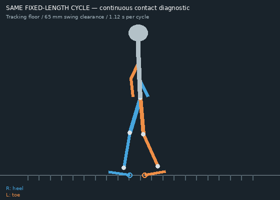
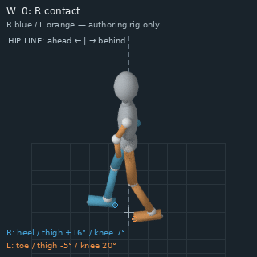

Fixed femur/tibia/foot lengths, forward knee poles and rigid heel/sole/toe pivots. Blue is anatomical right; orange is anatomical left. The grid tracks virtual forward travel to expose foot skating. This proof does not approve or replace painted Swordsman artwork.
All directions and phases · Shared pose cycle · Editable Blender rig

